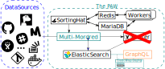

Grimoirelab¶
The PAW is built off of Grimoirelab, a toolset created by the CHAOSS-team to monitor the development process of open-source projects. While the basic mission statements of the PAW and Grimoirelab overlap quite neatly, there is a significant functional gap between a customizable tool for Monitoring a software project, and a warehouse of tools for monitoring any number of software projects in any number of ways.
What is a Grimoirelab?¶
GrimoireLab is best described as an ecosystem. A set of software tools able to perform related -sometimes overlapping- functionalities, intentionally made to inter-operate with each other, producing some insight into the development process of a certain project [1].
Overview¶
Legend:

The full System:
GrimoireLab [2] in detail:

Why Grimoirelab?¶
Between Perceval already being capable of parsing a large number of data sources; and the large number of pre-made analyses available between Graal, Arthur and ELK+CeresLib; Grimoirelab promotes solutions to a significant portion of the engineering issues resulting from the PAW’s requirements. So even though Grimoirelab by nature isn’t particularly suited to scaling or experimentation, it was decided that inheriting these features would be worth the increased complexity over a from-scratch approach. To address our concerns with scaling and experimentation, we created ElasticWrap, ../usage/graphql and Multi-Mordred
Changes to Grimoirelab¶
we made a few changes to grimoirelab before building on top of it. Most notably upgrading it to support ElasticSearch 8.x. This has been submitted to the original project, but the merge request is still pending review (and at time of writing has been for [AMOUNT OF TIME])
Footnotes